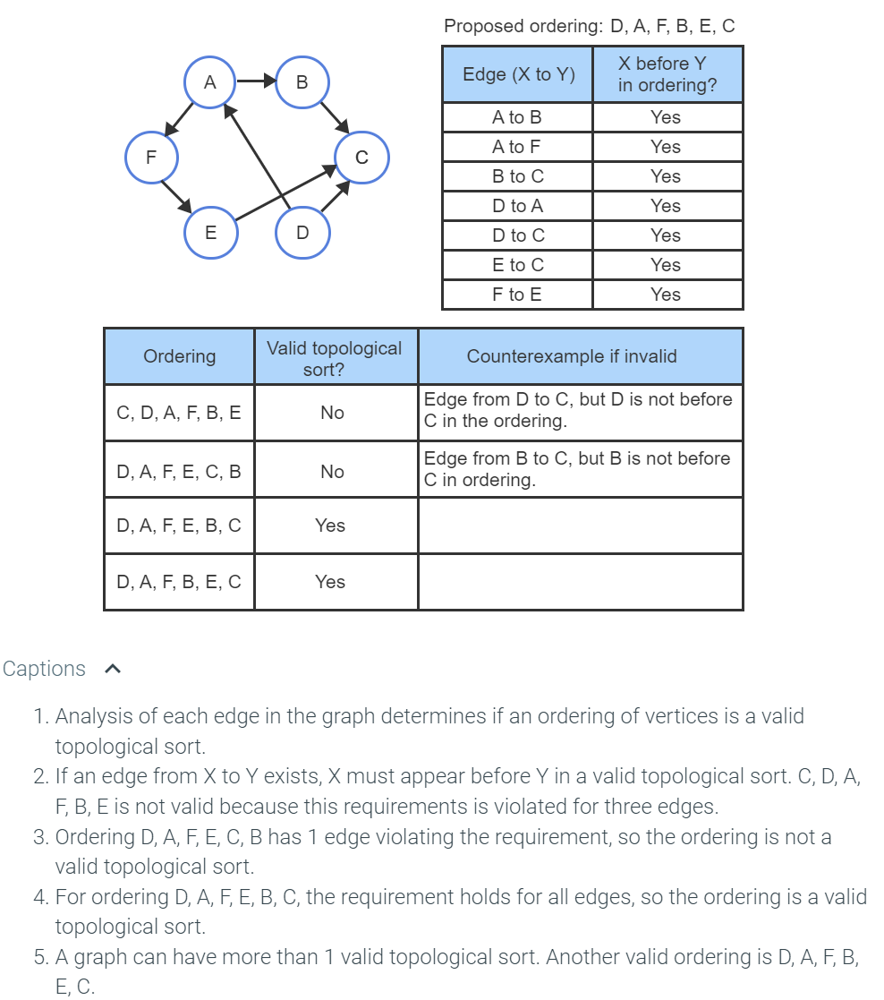

Lesson 1 Introduction
1.1 Data Structures
data structure is a way of organizing, storing, and performing operations on data.
| Data structure | Description |
|---|---|
| Record | A record is the data structure that stores subitems, often called fields, with a name associated with each subitem. |
| Array | An array is a data structure that stores an ordered list of items, where each item is directly accessible by a positional index. |
| Linked list | A linked list is a data structure that stores an ordered list of items in nodes, where each node stores data and has a pointer to the next node. |
| Binary tree | A binary tree is a data structure in which each node stores data and has up to two children, known as a left child and a right child. |
| Hash table | A hash table is a data structure that stores unordered items by mapping (or hashing) each item to a location in an array. |
| Heap | A max-heap is a tree that maintains the simple property that a node's key is greater than or equal to the node's childrens' keys. A min-heap is a tree that maintains the simple property that a node's key is less than or equal to the node's childrens' keys. |
| Graph | A graph is a data structure for representing connections among items, and consists of vertices connected by edges. A vertex represents an item in a graph. An edge represents a connection between two vertices in a graph. |
1.4 Abstract Data Types
| Abstract data type | Description | Common underlying data structures |
|---|---|---|
| List | A list is an ADT for holding ordered data. | Array, linked list |
| Dynamic array | A dynamic array is an ADT for holding ordered data and allowing indexed access. | Array |
| Stack | A stack is an ADT in which items are only inserted on or removed from the top of a stack. | Linked list |
| Queue | A queue is an ADT in which items are inserted at the end of the queue and removed from the front of the queue. | Linked list |
| Deque | A deque (pronounced "deck" and short for double-ended queue) is an ADT in which items can be inserted and removed at both the front and back. | Linked list |
| Bag | A bag is an ADT for storing items in which the order does not matter and duplicate items are allowed. | Array, linked list |
| Set | A set is an ADT for a collection of distinct items. | Binary search tree, hash table |
| Priority queue | A priority queue is a queue where each item has a priority, and items with higher priority are closer to the front of the queue than items with lower priority. | Heap |
| Dictionary (Map) | A dictionary is an ADT that associates (or maps) keys with values. | Hash table, binary search tree |
1.8 Constant time operations
-
Addition, subtraction, multiplication, division of fixed size integer or floating point values
-
Assignment of a reference, pointer, or other fixed size data value (
x = 110) -
Comparison of twor fixed size data values (like an
ifstatement) -
Read or write an array element at a particular index (
x = arr[index])
2
Self-adjusting algorithms:
https://webdiis.unizar.es/asignaturas/TAP/material/self_adjusting/9002d.htm
5 Graphs
5.3 Ajdacency List
List of adjacent vertices

A sparse graph has far fewer edges than the maximum possible. Many graphs are sparse, like those representing a computer network, flights between cities, or friendships among people (every person isn't friends with every other person). Thus, the adjacency list graph representation is very common.
5.4 Adjacency Matix
Each vertex is assigned to a matrix row and column, and a matrix element is 1 if the corresponding two vertices have an edge or is 0 otherwise

5.5 Breadth-first search
BST is a traversal that visits a starting vertex, then all vertices of distance 1 from that vertex, then of distance 2, and so on, without revisiting a vertex.
- Also known as a graph traversal

Breadth-first seach algorithm
BFS(startV) {
Enqueue startV in frontierQueue
Add startV to discoveredSet
while ( frontierQueue is not empty ) {
currentV = Dequeue from frontierQueue
"Visit" currentV
for each vertex adjV adjacent to currentV {
if ( adjV is not in discoveredSet ) {
Enqueue adjV in frontierQueue
Add adjV to discoveredSet
}
}
}
}
5.6 Depth First Search (DFS)
A depth-first search (DFS) is a traversal that visits a starting vertex, then visits every vertex along each path starting from that vertex to the path's end before backtracking.
Depth-first search algorithm
DFS(startV) {
Push startV to stack
while ( stack is not empty ) {
currentV = Pop stack
if ( currentV is not in visitedSet ) {
"Visit" currentV
Add currentV to visitedSet
for each vertex adjV adjacent to currentV
Push adjV to stack
}
}
}
Recursive:
RecursiveDFS(currentV) {
if ( currentV is not in visitedSet ) {
Add currentV to visitedSet
"Visit" currentV
for each vertex adjV adjacent to currentV {
RecursiveDFS(adjV)
}
}
}
5.7 Directed Graph
A directed edge is a connection between a starting vertex and a terminating vertex. In a directed graph, a vertex Y is adjacent to a vertex X, if there is an edge from X to Y.
- A path is a sequence of directed edges leading from a source (starting) vertex to a destination (ending) vertex.
- A cycle is a path that starts and ends at the same vertex. A directed graph is cyclic if the graph contains a cycle, and acyclic if the graph does not contain a cycle.

5.8 Weighted Graph
There is a weight associated with each edge. Can be a directed or undirected graph

5.9 Dijksta's Shortest Path
-
Finds the shortes path between vertices in a graph by edge weights
-
Cannot have negative edge weights (Bellman-Ford's algorithm can, but it is slower)
-
There are factors for the runtime, but O(V2)

5.10 Bellman-Ford's shortest path
Slower than Dijkstra, but can calculate negative edge weights. Runtime is O(VE)

Bellman-Ford Algorithm
BellmanFord(startV) {
for each vertex currentV in graph {
currentV⇢distance = Infinity
currentV⇢predV = null
}
// startV has a distance of 0 from itself
startV⇢distance = 0
for i = 1 to number of vertices - 1 { // Main iterations
for each vertex currentV in graph {
for each vertex adjV adjacent to currentV {
edgeWeight = weight of edge from currentV to adjV
alternativePathDistance = currentV⇢distance + edgeWeight
// If shorter path from startV to adjV is found,
// update adjV's distance and predecessor
if (alternativePathDistance < adjV⇢distance) {
adjV⇢distance = alternativePathDistance
adjV⇢predV = currentV
}
}
}
}
// Check for a negative edge weight cycle
for each vertex currentV in graph {
for each vertex adjV adjacent to currentV {
edgeWeight = weight of edge from currentV to adjV
alternativePathDistance = currentV⇢distance + edgeWeight
// If shorter path from startV to adjV is still found,
// a negative edge weight cycle exists
if (alternativePathDistance < adjV⇢distance) {
return false
}
}
}
return true
}
5.11 Topological Sort
A topological sort of a directed, acyclic graph produces a list of the graph's vertices such that for every edge from a vertex X to a vertex Y, X comes before Y in the list.
Runtime of O(|V|+|E|)

Topological Sort Algorithm
GraphTopologicalSort(graph) {
resultList = empty list of vertices
noIncoming = list of all vertices with no incoming edges
remainingEdges = list of all edges in the graph
while (noIncoming is not empty) {
currentV = remove any vertex from noIncoming
Add currentV to resultList
outgoingEdges = remove currentV's outgoing edges from remainingEdges
for each edge currentE in outgoingEdges {
inCount = GraphGetIncomingEdgeCount(remainingEdges, currentE⇢toVertex)
if (inCount == 0)
Add currentE⇢toVertex to noIncoming
}
}
return resultList
}
5.12 Minimum Spanning Tree
A graph's minimum spanning tree is a subset of the graph's edges that connect all vertices in the graph together with the minimum sum of edge weights. The graph must be weighted and connected. A connected graph contains a path between every pair of vertices.

Kruskal's minimum spanning tree algorithm
Determines the subset of a graph's edges that connect all the graph's vertices with the minimum possible sum of edge weights.
-
Space complexity: O(|E|+|V|)
-
Runtime complexity: O(|E|log|E|)
KruskalsMinimumSpanningTree(graph) {
edgeList = list containing all edges from graph
vertexSets = collection of vertex sets, empty initially
for each vertex V in graph
Add new set containing only V to vertexSets
resultList = new, empty set of edges
while (vertexSets⇢length > 1 && edgeList⇢length > 0) {
nextEdge = remove edge with minimum weight from edgeList
vSet1 = set in vertexSets containing nextEdge⇢vertex1
vSet2 = set in vertexSets containing nextEdge⇢vertex2
if (vSet1 != vSet2) {
Add nextEdge to resultList
Remove vSet1 and vSet2 from vertexSets
merged = union(vSet1, vSet2)
Add merged to vertexSets
}
}
return resultList
}
5.13 All pairs shortes path
An all pairs shortest path algorithm determines the shortest path between all possible pairs of vertices in a graph.

Floyd-Warshall algorithm
Cannot have negative cycles. This will generate a |V|x|V| matrix of values representing the shortest path lenghts between all vertex pairs in a graph.
Runtime of O(|V|3), Space complexity of Runtime of O(|V|2)
FloydWarshallAllPairsShortestPath(graph) {
numVertices = graph⇢vertexCount
// distMatrix is a numVertices x numVertices matrix
set all values in distMatrix to ∞
set each distance for vertex to same vertex to 0
for each edge in graph
distMatrix[edge⇢fromVertex][edge⇢toVertex] = edge⇢weight
for (k = 0; k < numVertices; k++) {
for (toIndex = 0; toIndex < numVertices; toIndex++) {
for (fromIndex = 0; fromIndex < numVertices; fromIndex++) {
currentLength = distMatrix[fromIndex][toIndex]
possibleLength =
distMatrix[fromIndex][k] +
distMatrix[k][toIndex]
if (possibleLength < currentLength)
distMatrix[fromIndex][toIndex] = possibleLength
}
}
}
return distMatrix
}
Floyd-Warshall algorithm: Path Reconstruction
Since the matrix only stores the path length, the path itself can be reconstructed with the following algorithm
FloydWarshallReconstructPath(graph, startVertex, endVertex, distMatrix) {
path = new, empty path
// Backtrack from the ending vertex
currentV = endVertex
while (currentV != startVertex) {
incomingEdges = all edges in the graph incoming to current vertex
for each edge currentE in incomingEdges {
expected = distMatrix[startVertex][currentV] - currentE⇢weight
actual = distMatrix[startVertex][currentE⇢fromVertex]
if (expected == actual) {
currentV = currentE⇢fromVertex
Prepend currentE to path
break
}
}
}
return path
}